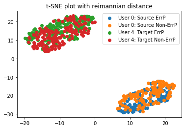
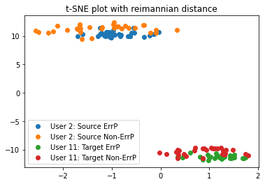

CS 7641 Project Final Report: Transfer Learning for Brain Signals
Project group 8
Team members: Andrew Xiao, Ekansh Gupta, Macmillan Jacobson, Ruikai Huang, William Shue
Introduction
Human communication with machines has evolved from keyboard, mice to touch and voice-based commands over the years, with thought-based communication the next in line.
Brain signals (measurement of the activity inside the brain) are useful for communicating with machines without any explicit effort like typing, speech, gestures, etc.
Brain-Computer Interfaces (BCI) read brain signals in a person’s brain and interpret them to decode the user’s intent (e.g., turning off the lights, typing a letter on the screen, etc.)
These BCI systems need supervised learning to decode
certain brain signals
Brain signals show a lot of variability between
users, tasks, etc. which makes generalizability of
detection models poor [1]. This is down to differences in
probability distribution between the source and
target data [2]. This makes it a necessity to retrain previous models to use them on unseen data, which considerably wastes time and effort of the user.
Thus, to provide high performance across the board,
these models need to be adapted for new and
unseen data. Some of the related work in this area includes using domain adaptation to manipulate the target data w.r.t the source data [1], using spatial filtering based models to learn features [7], using optimal transport algorithms [3], and more recently, using deep learning models [4],[6] to detect the presence of brain signals.
In this project, we work on improving the generalizability and cross-user detection of a specific kind of brain signal, known as the Error-related potential (Errp). An Errp signals is elicited in the brain when a user observes an error being made (like seeing a robot making the wrong move, etc.). Error potential signals have been useful for creating human-in-the-loop cyber physical systems for improving the performance of machine learning and reinforcement learning algorithms, as well improving the performance of robots, etc. We choose this specific brain signal because of its poor generalization capabilities among other brain signals, and its importance in creating brain-computer interface systems.
Problem Definition
Motivated by the importance of Generalization in Brain signals, we explore improving the generalization of a specific kind of brain signal, known as the Error-related potential (Errp) in this project.
An error potential is a signal that is elicited in the brain when a person observes an anomalous event, like witnessing a self-driving vehicle take the wrong turn, or a video game character making the wrong move, etc. These signals are recorded using a headset which contains electrode sensors. This data is recorded from multiple electrodes and thus has multiple channels. Each channel records these signals with a specific sample rate. After this data is recorded, machine learning and spatial filtering algorithms decode this recorded activity to infer whether the signal is an Error potential or not.
Typically, the error potential detection pipeline consists of block which generates embeddings based on the input signals, and a block which then uses these labeled embeddings to train a classification algorithm. Intra-user accuracies range from low to mid 70s for some popular detection algorithms like XDAWN + Riemannian Geometry [1] based classifier and EEGNet.
However, while error potential signals are universal among humans, their signal signature shows a lot of variance w.r.t. different users, environments, tasks, etc. Figure 1 shows the difference between the error potential signatures for two users. These differences make it difficult for classifiers which are trained on a specific user to be used for data coming from a new or unseen user. This results in poor generalization detection accuracy in detection models. To combat this, we formally define our problem statement to improve the generalization accuracy for ErrP detection.
Figure 1: Differences in ErrP signals in three different users
Mathematically speaking, we define our problem as follows: Say we have two data distributions, called the source domain Ds, and the target domain, Dt. Since these two distributions are not identical, a classifier trained on Ds computes the conditional probability P(Y | Ds) which is different from the conditional probability P(Y | Dt). We wish to analyse these two domains and their marginal probabilities and adapt Ds to Dt such that their generalization accuracy improves. We aim to this using a combination of supervised and unsupervised methods.
We want to explore several methods which are as follows:
1. Adapting a ML model like EEGNet [4] by fine tuning it for the test data in a supervised manner
2. Visualizing the embeddings generated by non-deep learning models like XDAWN + Riemannian Geometry [1] based models to see the disparity in probability distributions.
2. Adapting the testing data itself so that it becomes more identical to the training data. We want to explore both supervised and unsupervised methods to do so using approaches like domain adaptation [1] and optimal transport [3].
Data Collection
We will be using a publicly available ErrP dataset [5] for this project which has been used for model evaluation in previous research publications [1][4]
This dataset contains the data of 26 subjects with 340 signals each, recorded via 56 electrodes on their scalp. Each signal is a time series sampled at 250Hz. This dataset is pre-cleaned and does not require any augmentation.
For our metrics, we will be using balanced accuracy and AUC score as metrics for evaluating the performance of our models
Balanced accuracy is a good metric for imbalanced class datasets as it gets rid of highly sensitive (biased towards the positive class) or highly specific models (biased towards the negative class)
AUC is also a better metric than accuracy as it compares the performance of the model across different cut-off thresholds and thus provides a better evaluation of the model characteristics
Methods
Model 1: EEGNet
We first aim to implement a deep learning architecture called EEGNet to create a baseline
An Overview of EEGNet
The image above (Source: Vernon J Lawhern et al 2018 J. Neural Eng. 15 056013) illustrates the overall architecture of EEGNet.
The thin gray lines represent convolutional connectivity or (feature maps). The first layer consists of a temporal convolution, the second and third consists of a depthwise convolution.
The fourth column then consists of a separable convolution comprised of a depthwise convolution and a pointwise convolution. After this the classification is preformed.
Our Methods
Initial Testing
A variety of methods were used to approach this problem. As a baseline reference of something that already existed in
this real of Machine Learning we looked at Army Research Lab's open source project ARL_EEGModels.
This repository contained several python implementations of effective ML models which process and classify EEG data
using Keras and Tensorflow. The models conatined were EEGNet, EEGNet_SSVEP, EEGNet_old, DeepConvNet and
ShallowConvNet.
The EEGNet served as our initial basis of testing, the
code which was written to test it on the data set we selected performs the following in order to determine how
well the model preforms on our data.
a. After initial setup; data for the different test subjects is looped over.
b. 10 randomly selected test samples from a users data are selected for training (the rest are kept for testing)
c. An instance of ARL's implementation of EEGNet is created with a loss function and optimizer.
d. The model is trained over a given number of epochs with class weights being calculated.
e. The resulting trained model is used to predict the classes of the data and from there accuracy results are
calculated.
Problem Specific Improvments
While the previous work provided us with a strong basis on how to achieve our goal,
we needed a way to ensure that we could train and test on different users data. Such that one users data could be used
to classify anothers, and groups of user data could be used to train and therefore classify a single users data. So --
modifications were made to make this possible.
Code was set to 1. Train a model on one users data and test on another, and 2. Train a model on a set of multiple users
data and test on the excluded users data.
This allowed us to generate a model that was not too heavily tuned to a specific individaul as well as test the
performance of a model across individauls, a central goal of our effort. Unfortunately the results were not as good as
we were hoping for, but a solution was quickly found.
Modification of the Activation Function
It was found that modifying the activation function from a softmax to a sigmoid drastically improved the results and
allowed a classification of 64% accuracy.
A collection of Convolutional Neural Network models for EEG Signal Processing and Classification, using Keras and
Tensorflow
Contains: EEGNet, EEGNet_SSVEP, EEGNet_old, DeepConvNet and ShallowConvNet,
Trains EEGNet on different sets of EEF data and records the accuracy and results.
Model 2: xDAWN + Riemann Geometry
We also implement the state-of-the-art xDAWN + Riemann Geometry model which classifies ErrP signals from non-ErrP signals using covariance matrices [10]. It works as follows:
1. Train two set of 5 xDAWN spatial filters, one set for each class of a binary classification task, using the ERP template concatenation method as described in [1].
2. Perform EEG electrode selection through backward elimination to keep only the most relevant channels.
3. Project the covariance matrices onto the tangent space using the log-Euclidean metric.
4. Perform feature normalization using an L1 ratio of 0.5, signifying an equal weight for L1 and L2 penalties. An L1 penalty encourages the sum of the absolute values of the parameters to be small, whereas an L2 penalty encourages the sum of the squares of the parameters to be small.
5. Perform classification using an elastic net regression.
Feature explainability and covariate shift
In order to visualize the source and target domain distributions (different users in our case), we generate the probability distributions for a set of training and test users and visualize them. For this purpose, we generate embeddings from our dataset using XDAWN + Riemannian Geometry algorithm [1] which estimates the multi-channel signal signature from a collection of noisy labeled samples. Once the signal signatures or templates are estimated, this algorithm correlates individual signals with the estimated templates to generate covariance matrices. Thus, we get a collection of covariance matrices from the initial collection of signal data, where each matrix corresponds to each individual signal data point.
Typically, these NxN matrices are of the order of N~20, which makes visualization of these matrices challenging. To combat this problem, many works use t-SNE [8], an algorithm which projects these matrices on a 2d space. In order to calculate the distance between two matrices, we use the Riemannian distance parameter as used in [9]. Using the riemannian distance paramter has been shown to provide more accurate visualization of the distribution of covariance matrices.
Model 3: Unsupervised domain adaptation for the signal covariance matrices
We implement an unsupervised model for reducing the shift between train and test distributions using a technique outlined in [1], which uses matrix multiplications to center two distributions (of covariance matrices) along the identity matrix. This transformation is called affine transform and we later show that it reduces the divergence between our training and test user distributions. The Riemannian distance between two covariance matrices P1 and P2 is defined as the following.
For a distribution of these matrices P1, P2, ..., PN, we can define the center of mass or the Riemannian mean of the distribution as the matrix which minimizes the sum of square of the Riemannian distance from the center to each matrix.
Now, since different distributions have different supports, they are shifted w.r.t. each other. In order to center these distributions, we use affine transforms to shift the matrices such that the center of mass or Riemannian mean of both the distributions is centred at the identity matrix. This is done by the following equation as described in [1]
Where R denotes the Riemannian mean of the jth distribution and Ci denotes the ith matrix in the jth distribution.
Results
EEGNet performed with an accuracy of roughly 64% for intra-user (training and testing on the same user). However, it performed as shown in the following table for cross-user accuracy. In the table below, each {i,j} refers to the test accuracy of EEGNet when it was trained on user {i} and tested on user {j}. We obtain a mean balanced accuracy per test user of 58.12%. We also trained with a few combinations of two users as training users and the remaining users as test users and a few combinations of three users as training users and the remaining users as test users and we obtained a baseline transfer accuracy of 59.52% and 59.87% respectively.
We then tried to use it with few-shot learning where the training dataset for EEGNet was supplemented with 10 labled samples from the test subject. This yielded a mean test accuracy of 59.04% which was only marginally better than the baseline accuracy. The detailed accuracy values and means are shown in the two tables below. Figure 2 also shows a bar plot of test accuracies per user w.r.t. baseline as well as few-shot learning.
Baseline:
Few shots:
Figure 2: Plot of baseline cross-user accuracy vs few-shot learning accuracy
Signal Visualization and Feature explanation
To explain the poor generalization from EEGNet, we generate and contrast the user-wise embeddings of the signal data using t-SNE with the riemannian distance metric. This projects 400-dimensional data (20x20 covariance matrices) onto a 2-dimensional plane. Projecting our signal embeddings helps us understand why we obtain poor generalization accuracy when training on one user and testing on another user. As we can see in the figures below, our data exhibits covariate shift [2], which is the shifting of target distribution w.r.t. source distribution. Due to this shift, a model trained on the source distribution does not generalize well to the target data. Now, there are 16x15 combinations of these visualizations but here we present 12 such examples spanning different user combinations.


Figure 3: Visualization of divergence betwen source and target embeddings
We need methods to reduce this covariate shift and try to map the source data as near the target data as possible. There are some unsupervised methods to achieve this, namely affine transforms proposed in [1]. Affine transforms are an unsupervised method to align a distribution of positive semi-definite matrices w.r.t. another distribution. In order to evaluate this method, we will also be implementing a code to measure the difference or divergence between our source and target distributions. Since these two distributions are not absolutely continuous w.r.t. each other, we cannot use KL-divergence to calculate the distance between these two distributions. Instead we implement Jenson-Shannon Divergence (JS-Divergence), which is a modified version of KL-divergence.
Model 2: xDAWN + Reimannian Geometry for classifying brain signals
The results for the baseline cross user-detection are as follows. The mean cross-user detection accuracy using the xDAWN and riemannian geometry model was 53.67%.
Baseline: Cross-user detection accuracy using the xDAWN and riemannian geometry model
Implementing a divergence metric to measure the disparity between our datasets
We implemented a JS-Divergence metric for evaluating the divergence between our source and target datasets. Since our signals are vectors and their probabilities are not defined for every point in space, we use numerical methods to calculate divergence and
Usually KL divergence is used to calculate the divergence between two distributions but since these probabilities are not absolutely continuous w.r.t. each other, we use JSD which is a slight modification of KL divergence as shown in the figure below. Here p and q refer to source and target marginal distributions respectively
Figure 4: Jenson-Shannon Divergence relation to KL-Divergence
In order to compute divergences using our vectors, we use the nearest neighbor approach outlined in [11] which calculates the divergence between two probability distribution samples p and q, according to the equation below
Figure 5: Jenson-Shannon Divergence between two distributions
On evaluating the divergence between user pairs, we found that on an average, there was a mean divergence equal to 139.05 between a training user's distribution and a test distribution. The complete figure is shown below.
Figure 6: Jenson-Shannon Divergence between each user pair
Model 3: Unsupervised domain adaptation for the signal covariance matrices
We also implemented an unsupervised method for reducing the divergence between our distributions. This method is called affine transforms and was proposed in [1] which uses the properties of positive semi-definite matrices to align their center of mass to the identity matrix. This way, both distributions are centered at the identity matrix and thus have significantly lower divergence.
After applying this method, we obtained the following JS-divergence matrix with a mean JS-divergence equal to 14.86.
Figure 7: Jenson-Shannon Divergence between each user pair
In order to contrast the new distribution w.r.t. the old pairwise distributions visually presented in Fig 3, we present the same user pairs in Fig 8, after applying unsupervised domain adaptation.
Figure 8: Visualization of divergence betwen source and target embeddings after unsupervised domain adaptation
Evaluating the performance of our modified distributions
We finally evaluate the performance of our transfer learning algorithm with adapted source and target distributions to see if unsupervised domain adaptation improves the generalization capabilities of classification algorithms for high-dimentional time series data like EEG brain signals. We obtained a final mean accuracy of 55.16% which implies an improvement of about 1.49%. The final accuracy table is as outlines below
Baseline: Cross-user detection accuracy after unsupervised domain adaptation
Conclusion
In this project, we worked on improving the generalizability and cross-user detection of a specific kind of brain signal, known as the Error-related potential (Errp). An Errp signals is elicited in the brain when a user observes an error being made (like seeing a robot making the wrong move, etc.). We explored several methods which were as follows:
1. Adapting a ML model like EEGNet [4] by fine tuning it for the test data in a supervised manner
2. Visualizing the embeddings generated by non-deep learning models like XDAWN + Riemannian Geometry [1] based models to see the disparity in probability distributions and coding a metric to determine the disparity between the distributions.
3. Adapting the testing data itself so that it becomes more identical to the training data using an unsupervised domain adaptation technique known as affine transforms.
We found that few-shot learning and domain adaptation provided marginal improvements for cross-user accuracy. We also found that affine transforms are an effective tool to reduce the divergence between two distributions.
Team Member Responsibilities and Contribution
The link to the excel which details the responsibilities of each team member along with the proposed timeline can be found here.
The link to the excel which details the contribution of each team member to prepare the project task can be found here.
References
[1] P. Zanini, M. Congedo, C. Jutten, S. Said and Y. Berthoumieu, "Transfer Learning: A Riemannian Geometry Framework With Applications to Brain–Computer Interfaces," in IEEE Transactions on Biomedical Engineering, vol. 65, no. 5, pp. 1107-1116, May 2018
[2] Raza H, Rathee D, Zhou SM, Cecotti H, Prasad G. Covariate shift estimation based adaptive ensemble learning for handling non-stationarity in motor imagery related EEG-based brain-computer interface. Neurocomputing. 2019
[3] Nathalie T. H. Gayraud, Alain Rakotomamonjy, Maureen Clerc. Optimal Transport Applied to Transfer Learning For P300 Detection. BCI 2017 - 7th Graz Brain-Computer Interface Conference, Sep 2017, Graz, Austria. pp.6. ffhal-01556603f
[4] Lawhern, Vernon J., et al. "EEGNet: a compact convolutional neural network for EEG-based brain–computer interfaces." Journal of neural engineering 15.5 (2018): 056013
[5] P. Margaux, M. Emmanuel, D. S´ebastien, B. Olivier, and M. J´er´emie, “Objective and subjective evaluation of online error correction during p300-based spelling,” Advances in Human-Computer Interaction, vol. 2012, p. 4, 2012
[6] Schirrmeister, Robin Tibor, et al. "Deep learning with convolutional neural networks for EEG decoding and visualization." Human brain mapping 38.11 (2017): 5391-5420
[7] Cruz, Aniana, Gabriel Pires, and Urbano J. Nunes. "Spatial filtering based on Riemannian distance to improve the generalization of ErrP classification." Neurocomputing 470 (2022): 236-246.
[8] Maaten, Laurens van der, and Geoffrey E. Hinton. “Visualizing Data Using T-SNE.” Journal of Machine Learning Research, Jan. 2008.
[9] Mantegazza, Carlo, and Andrea Mennucci. “Hamilton--Jacobi Equations and Distance Functions on Riemannian Manifolds.” Applied Mathematics and Optimization, Dec. 2002. Springer Nature, https://doi.org/10.1007/s00245-002-0736-4.
[10] Barachant A and Congedo M 2014 A plug & play P300 BCI
using information geometry
[11] Perez-Cruz, Fernando. “Kullback-Leibler Divergence Estimation of Continuous Distributions.” International Symposium on Information Theory, July 2008, https://doi.org/10.1109/isit.2008.4595271.